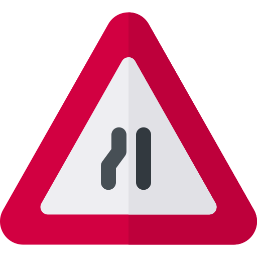
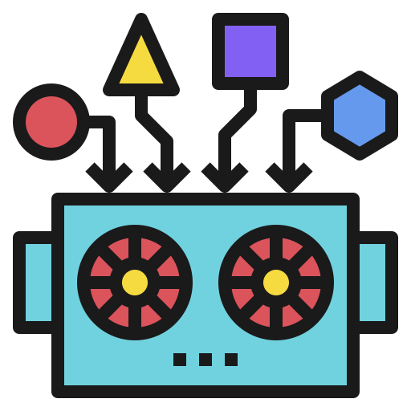

At a Glance

Revolutionary
AI is the new Internet Electricity Wheel.
Tool
It's not alive, it's just math.

Narrow Expertise
Incredibly magically at something very specific.

Economic Equation
The printing press of predictions.

Prediction Problem
Everything is kinda prediction problem.
Human AI Team
Computers couldn't kill chess, we'll probably be fine.